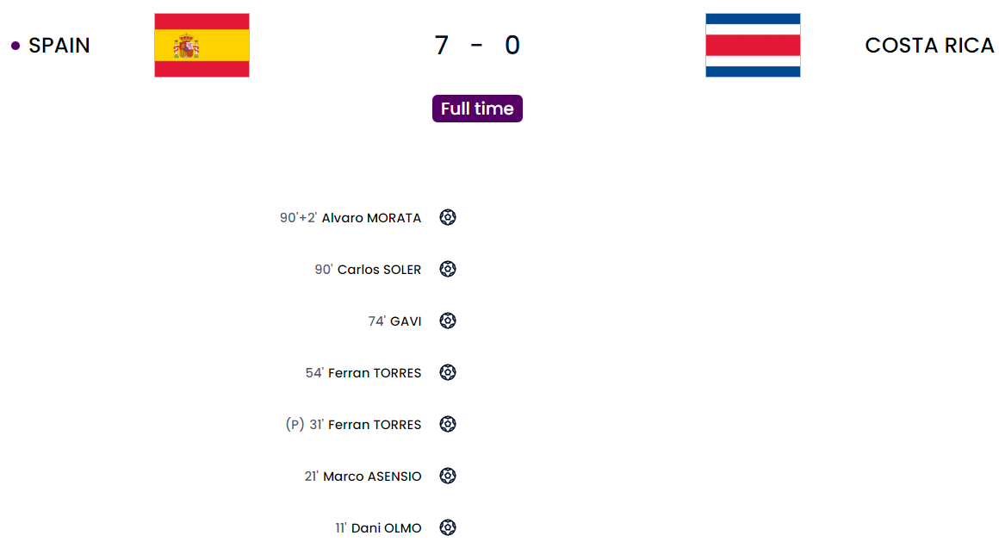

Day 4
Morocco v Croatia
The 3rd goalless draw. This is already more than in 2018 when there was only 1. This was however one of the dud ones. There weren’t enough clear-cut chances yet again. It was eventful but the shots were all over the place. The keepers were hardly tested. Mazraoui had to come off due to an injury sadly. Ez Abde came on for Morocco. He was lively but he wasn’t much of a passer. He just wanted to dribble a lot and when he did put a cross in nobody was there which summed up the game really.
Morocco
Croatia
Germany v Japan
Oh wow. What a result for Japan. I said Asano was injured but he came in time and he was the star turn as a sub along with Doan who managed to make the second half count. The first half told a very different story however because Germany was really positive from the start with a few flashes from Japan on the counter. And they had the chance for the lead when Raum got tackled by the keeper and Gundogan slotted the penalty home. After that they were good and Musiala, Gnabry, Raum looked really threatening. In the second half things were turning around. Japan slowly managed to get back in terms of attacking threat. The subs did the star turn for Japan as the German attack was not attacking well enough. The lack of a proper ST hurting the situation even further. Havertz was not good enough as a false 9 or ST like player. I think they are a really really good team but without Werner who was the only proper ST that Flick relied on injured he has to trust in someone else like Moukoko or anybody else. The goals came from Doan who scored off the rebound when a cross was parried into his path by Neuer. Asano managed to score off a long free kick. He took a great touch and managed to finish at the near post.
Off-topic
There was a form of protest from the German players which I am 100% behind. There were sanctions mentioned for the teams that used the OneLove armband(An armband the captain wears to show support for human rights and LGBTQ+ groups) like yellow cards and/or fines to the countries and some countries actually obeyed that stupid directive like England. Germany, however, didn’t and actually, the armband was hidden under Neuer’s shirt apparently and in the team photo, all of them were covering their mouths to show solidarity which I absolutely love. Just because we are in a country that disrespects human rights doesn’t mean we have to stop speaking against it. Well done Germany.
Germany
Japan
Spain v Costa Rica

A statement show. Young baller Gavi. Costa Rica ain’t gonna survive. This was an amazing show. Yeah, you could say it was just Costa Rica but the way they managed to pass the ball around. The possession. The spaces they got. The fact that they started without an out-and-out No 9 but still managed to move the ball well was very telling. Pedri and Gavi made a start. They are most definitely the future of Spain’s midfield. Gavi stood out brilliantly for his tenacity. Managed to draw fouls. Ran into space really well and even got a great goal with the outside of his foot. First Olmo scored after a good move and the ball fell to him and he scored. Asensio was next with another good bunch of passes which teed him up with a first-time shot. Later Torres slotted a penalty after Jordi Alba was tackled in the box. Next, in the second half, Torres scored after holding onto the ball for so long and managed to finish past Navas. Then it was Gavi’s outside foot volley from a Morata assist(He was shaky but got into the game well. Enrique still did the right thing benching him). Later Soler scored after Navas parried a shot right into his path and finally Morata scored after another great move. His finish was decent on his left. Good placement. I think Spain are favorites to top the group.
Spain
Costa Rica
Belgium v Canada
Unlucky Canada. Belgium experience shines through. Hazard rolls back the years. Take a bow Canada. 36 years since their last World Cup and they gave a good account of themselves. Belgium’s experience of being the dark horses forever in every tournament paid off as they came away with the points in this game. The game started well for Canada when they got a penalty when Carrasco handled the ball in the box after a VAR check. However, Courtois managed to save the penalty from Davies. Later on, a long ball from Alderweireld was taken well and finished by Batshuayi. After that, nothing major really happened in the game apart from a good performance from Hazard who was really decent. Both he and De Bruyne were really good as always.